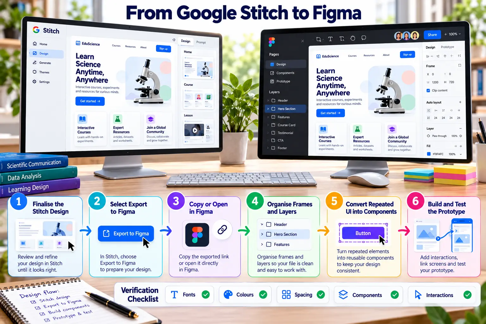

From Google Stitch to Figma
Transfer an AI-generated direction into a structured Figma file for components and prototyping.

Stitch to Figma procedure
Finalise the Stitch design
Resolve content, hierarchy and responsiveness issues.
Select Export to Figma
Use the available export or copy option.
Open and verify
Confirm every required screen and asset transferred.
Organise frames and layers
Rename pages, frames, groups and layers.
Create components and variants
Replace repeated UI with reusable components.
Build and test the prototype
Connect screens and test one realistic task.
Transfer verification
- Fonts and hierarchy remain correct.
- Colours match defined tokens.
- Spacing and Auto Layout behave consistently.
- Repeated elements use components.
- Interactions form a complete task.
If direct export is unavailable: retain screenshots and design rules, rebuild in Figma and document the manual transfer.